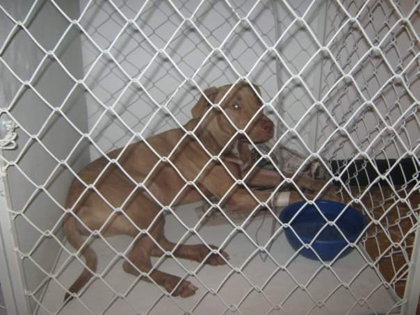
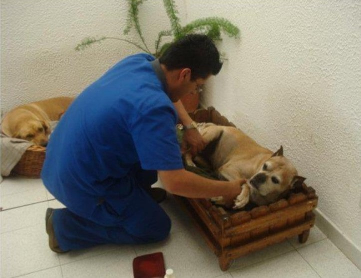

Consulta
Cirugía
Los procedimientos quirurgicos se realizan con equipos especializados y materiales de alta calidad teniendo como objetivo mejorar la salud y el bienestar del paciente.
RegresarEcografía

Buscando ofrecer una mejor atención en Salud Animal Centro Médico Veterinario y con el ánimo de ofrecer servicios a otros profesionales del sector, nuestra clínica adquirió un equipo de ecografía, para ofrecer estudios ecográficos en consultorio. En un comienzo los estudios se van a realizar en pequeñas especies (Mascotas).
RegresarEstetica

Es un servicio adicional en donde se atienden animales que requieren peluqueria y belleza. Es adelantado por personal idoneo y calificado.
RegresarAsesoria en Producción Animal

class="parrafo"Las asesorias son realizadas por medicos veterinarios especialistas en produccion. Atendemos bovinos, equinos, porcinos, aves, peces y producciones no convencionales.
RegresarGuarderia

Servicio adicional en donde se presta el hotel canino, en este tienen actividad fisica, grandes espacios y zonas verdes, alimentacion y paseos. La mascota se entrega limpia.
RegresarHospitalización
El paciente es atendido por un profesional titulado las 24 horas del dia administrando y aplicando las medicinas necesarias para mejorar su salud.
RegresarConsulta Domiciliaria
El medico veterinario se trasladara al lugar que es requerido para atender el paciente ya sea en casa o en finca. Atendemos animales de granja.
RegresarPet Shop
Podrás encontrar alimento concentrado, medicamentos veterinarios, accesorios, productos de higiene y belleza
Regresar